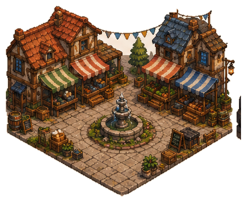

Clients
0 en attenteLes premiers clients arrivent bientôt.


Consulte ici toutes les recettes et le détail des ingrédients.
Gagne les matériaux de base en jouant, puis achète les ingrédients qui te manquent.
Déplace-toi jusqu’à une parcelle, puis choisis ce que tu veux planter.

L’espace consacré aux meubles, équipements et futures technologies du Comptoir.

Chaque table ou chaise récupérée rejoint automatiquement sa place dans la salle de service.

Tables, chaises, rangements, tapis et postes de travail sont fabriqués ici.
Niveau 1Les postes apparaissent à leur emplacement définitif quand tu les construis. Touche une machine pour accélérer son travail.
Recrute des spécialistes et choisis les automatisations qui restent actives.
Une progression tardive qui automatise les tâches répétitives sans supprimer les décisions.
Développe chaque activité et ouvre de nouveaux établissements sans remise à zéro.
Améliore le service, la cuisine et l’automatisation sans déplacer les décors.

Les déblocages viennent des matériaux, des plans et des machines. Cette page reste accessible directement depuis la barre du bas.
Chaque série complétée donne un bonus permanent.
Élimine des groupes identiques pour récupérer du tissu et des ressources bonus.
Courts, moyens et longs : il y a toujours une prochaine carotte.
Contrôles, sauvegarde et confort de jeu.
Disponible maintenant.
La partie est sauvegardée automatiquement sur cet appareil. Exporte-la avant une grosse mise à jour.
Jamais sauvegardée